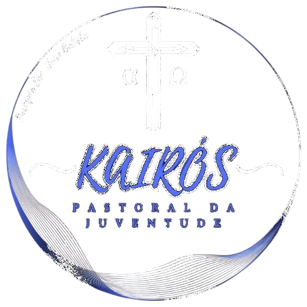
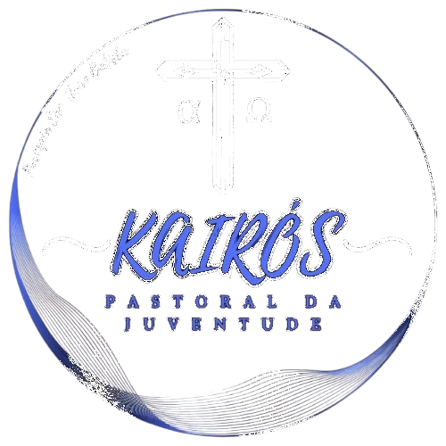

Paróquia São João Batista
Ituiutaba/MG
Comunidade
História da Paróquia São João Batista
Início
Os bairros, Junqueira Independência, Brasil, e Camargo, (marcando, na época, o fim da cidade) tinha uma ligação viva com São Benedito que já tinha uma capela com casa paroquial e alguns construções devido à organização avançada do movimento Negro com os congados e suas festas. O crescimento das atividades pastorais na capela – tais como grupos de reflexão, CEBs, catequese e jovens, Legião de Maria e Movimento Negro de São Benedito tornou-se imperativo aumentar o tamanho da capela.
A Capela de São João
Dois fatores no Bairro Junqueira e os bairros vizinhos foram decisivos para a construção de uma capela na região, Primeiro foi o aumento de atividades pastorais numa região - grupos de reflexão, catequese, e movimento de jovens. Em segundo lugar a Paroquia NS D”Abadia havia recebida a doação de um terreno na Rua Joaquim Davi, 888, para a construção de uma Igreja. Essa forte ligação entre as duas comunidades encaminhou uma solução para as duas. No ano 1977, os alicerces da capela foram marcados na Rua Joaquim Davi de acordo com a metragem da capela São Benedito, e um belo dia um grande caminhão encostou na praça para receber as telhas, madeiramento e janelas, da capela em processo de ser desmontada, e levar tudo para o seu novo destino na Rua Joaquim Davi, 888 Bairro Junqueira. Era uma mão lavando a outra – a comunidade na Junqueira levantou as paredes e fez o contra piso e as janelas e cobertura da capela São Benedito que, por sua vez, com os recursos das festas comunitárias e do movimento São Benedito aumentou o tamanho da sua capela Ao terminar a construção da capela a comunidade na Junqueira reuniu e após muita discussão e conversa, com a votação escolheram o nome da nova capela – São João Batista. A partir desse momento a comunidade São Joao Batista passou a ter as suas próprias reuniões e celebrações, para construção e formação da comunidade. Várias tentativas foram feitas para aumentar o espaço da capela pelos lados e pelos fundos mas sem sucesso
Capela e Comunidade São João Batista
Com seu espaço físico garantido, o povo partiu para a consolidação da “Comunidade povo em Marcha”. Como todas as demais comunidades da Paroquia N S D’Abadia, São João implementou a renovação da Igreja, iniciada pelo Concilio Vaticano II (1962-1965), que já tinha sido traduzida para a realidade da Latino Americana pelas Conferencias Episcopais da América Latina (CELAM) em Medellin (na Colombia, 1968), e mais tarde em Puebla (no Mexico,1979). As marcas registradas dessas duas conferencias foram “Opção Pelos Pobres” – Medellin -, e “Comunhão e Participação” – Puebla -, como metodologia de evangelização na Igreja da América Latina. O resultado prático da Conferência de Medellin pontuou três frentes de trabalho: “Opção pelos Pobres”, “Comunidades de Base”, e “Leitura Popular da Bíblia” nos “Grupos de Reflexão”, assim orientando todo o trabalho pastoral, empurrando as atividades pastorais para os bairros, mantendo casamentos e batizados na Igreja Matriz.
Os padres que participaram do processo
Os padres Oblatos privilegiadas de participar na construção das comunidades na Paróquia N S D’Abadia entre 1972 e 1885 foram Martin, Miguel e Tomé. Martin e Miguel moraram juntos no Bairro Natal durante alguns anos. Miguel morou numa casa alugada na 32 com Minas Gerais. Tomé trabalhou junto com o pessoal na Roça Comunitária Martin daqui foi para a Baixada Fluminense, onde passou muitos anos e hoje está na casa do pai; Miguel depois de Ituiutaba foi para Ceres, Goiânia e terminou em Paranaiguara antes de aposentar na Irlanda. Tomé continua em Ituiutaba, e trabalha com o Estudo Bíblico
 



Pastorais, Movimentos e Grupos de Apoio
- Pastoral Familiar
A Pastoral Familiar promove a evangelização e o acompanhamento das famílias, oferecendo suporte espiritual e prático para os desafios da vida familiar. Além de realizarem os cursos de batismo e matrimônio - Pastoral da Juventude (Kairós)
A Pastoral da Juventude ou Grupo de Jovens Kairós dedicam-se ao acolhimento e formação de jovens, incentivando sua participação ativa na Igreja com atividades voltadas para espiritualidade, missão e formação. - Pastoral do Dízimo
É responsável por conscientizar os fiéis sobre a importância do dízimo como ato de fé, gratidão e compromisso com a Igreja e a comunidade. Por meio da contribuição regular e generosa, os recursos arrecadados ajudam na manutenção das atividades pastorais, obras sociais, evangelização e conservação dos espaços litúrgicos. - Pastoral da Catequese
Dedica-se à formação cristã de crianças, jovens e adultos, preparando-os para os sacramentos e aprofundando a vivência da fé. - Pastoral da Litúrgia
Cuida da organização e vivência das celebrações litúrgicas, garantindo a beleza e o sentido das celebrações, como missas, sacramentos e momentos de oração comunitária. - Pastoral dos Acólitos e Coroinhas
Dedicada à formação e ao acompanhamento de crianças, adolescentes e jovens que servem ao altar durante as celebrações litúrgicas. Eles desempenham um papel fundamental no auxílio ao sacerdote, contribuindo para o bom andamento das missas e cerimônias religiosas. - Pastoral dos Ministros Extraordinários da Comunhão Eucarística (MECE)
Essa pastoral é formada por leigos e leigas que, devidamente preparados e autorizados pela Igreja, colaboram na distribuição da Eucaristia durante as missas e na visita aos enfermos, idosos e impossibilitados de participar presencialmente das celebrações. - Pastoral da Criança
Atua no cuidado das crianças em situação de vulnerabilidade, com foco em saúde, nutrição, educação e formação espiritual, valorizando a dignidade de cada vida. - Terço dos Homens
Um movimento de oração que reúne homens para a meditação dos mistérios do Rosário, fortalecendo a fé, a vida familiar e a comunidade por meio da devoção a Nossa Senhora. - Terço das Mulheres
Encontro de oração que promove a espiritualidade e a devoção mariana entre as mulheres, criando um espaço de fé, unidade e apoio mútuo. - Grupo Pais e Mães Intercessores
Encontro de oração que promove a espiritualidade e a devoção mariana entre as mulheres, criando um espaço de fé, unidade e apoio mútuo.Formado por pais e mães que se reúnem em oração para interceder pelos filhos, famílias e intenções da comunidade, fortalecendo os laços familiares na fé cristã. - Vicentinos (SSVP)
A Sociedade de São Vicente de Paulo é uma organização de leigos dedicada à caridade, visitando e assistindo pessoas e famílias em situação de vulnerabilidade, com base no amor cristão. - CPP (Conselho Pastoral Paroquial)
Órgão que coordena e planeja as ações pastorais da paróquia, promovendo a unidade entre as diversas pastorais e movimentos, em sintonia com a missão evangelizadora da Igreja. - CAEP (Conselho Administrativo e Econômico Paroquial)
Grupo responsável pela gestão administrativa e financeira da paróquia, garantindo a transparência e o bom uso dos recursos para a manutenção e desenvolvimento das atividades pastorais.
= Pastoral
= Movimento
= Grupo de apoio
Para mais informações sobre as Pastorais e Movimentos, entrar em contato com a Secretaria Paroquial pelo telefone (34) 3269-2660 ou pelo Whatsapp (34) 9 9888-2660